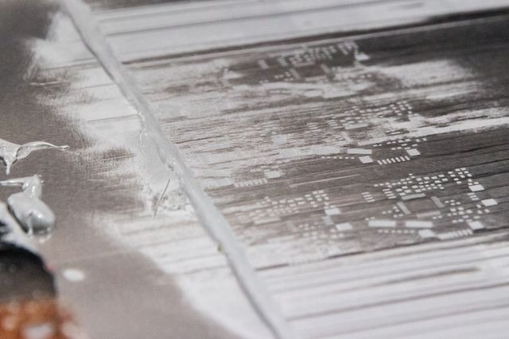
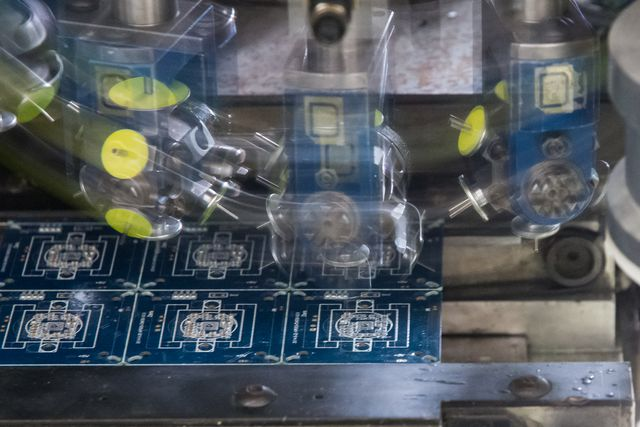
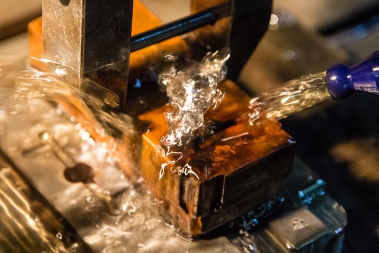

This is the first in a bi-weekly series of blog posts about what we are learning running our lean hardware startup, Form, in Shenzhen.
It's almost two years ago now since Paul Graham published his essay observing a renaissance for hardware startups. Not everyone agreed, it's hard to spot sea changes as they're happening, but we're now well past the point of deniability.
There are a lot of factors driving this change, from the emergence of smartphones to crowdfunding and 3D-printing. Most of these factors have in common that they lower thresholds for entry rather than being groundbreaking. Powerful microcontrollers had been around for long, but it wasn't until Arduino made programming for them easy that a healthy community of enthusiasts formed. The story of Makerbot and 3D-printers is similar.
While these tools and communities have made rapid prototyping accesible to anyone, the same cannot be said for production. Manufacturing is still difficult, and the gap between a fully functional prototype to one that is manufacturable is as wide as ever. Hardware, as the cliche would have it, is still hard.

A PCB is placed flat under the laser-cut stencil and the solder is applied in preparation for mounting components on the board.
So what do you do when you're a lean hardware startup, naïf and ready to make your dent in the universe? The good news is you have more options than ever, the bad news is most of them have serious problems.
You can call one of the firms specializing in supply chain management to be your interface to China. Some have turnkey solutions for manufacturing, distribution and sales that can leave you managing only your brand and basic product development. This might sound tempting but the downside is that your company will be locked to this vendor from day one. This is a long-term strategic problem, but for some it's still a tradeoff worth doing.

After the solder has been added to the PCB a pick and place machine such as this will very rapidly place components on the board.
You can try to manufacture at home. Large corporations such as GE, Apple and others have announced initiatives to move some manufacturing back to American shores. You'd be forgiven to think that's an option to you as well. These initiatives are however very limited, made by large corporations for strategic reasons. In order to iterate quickly, a lean startup needs an ecosystem of different providers and such an ecosystem is difficult to find outside of the Pearl River Delta.
There are exceptions. Arduino has done a tremendous job manufacturing in Italy, but their product is a special case. It's just a circuit board, probably one of the most commoditised components in tech. It's likely that in addition to a PCB your BOM includes injection molded plastic, metal parts and tactile components. If you try to source all these pieces in the west, chances are you'll end up repeating the mistakes of Lockitron. You'll find that there are few integrated factories, turn-around time is long and coordination is hard. As a result iterations are expensive, and worse, slow.
Fast iteration is the secret to innovation. The faster you can turn your prototypes, the faster your product will be ready and the better it will be. In a world where ideas are not scarce, execution becomes the limiting factor. It follows that every product idea has a window of opportunity and if your competitor iterates faster than you, you will lose.
The good news is that in Shenzhen, merchants on Taobao offer next day PCBs for twenty dollars. Even stencils are affordable and many components can be bought for a tenth of what Digikey asks. Shipping is same or next day by default. Local shops offer simple aluminium molds for less than a grand and silicone ones for a couple hundred. It's prototyping heaven, and when you're ready to scale there are factories that can do everything from injection molding and assembly to packaging under one roof. Best of all, startups with small volumes and large ambitions are welcome to apply.
My father had a few phrases that he oft repeated while I was growing up. One of his favourites was; "I don't care what you do, as long as it's difficult." It wasn't true of course, he cared deeply, but the point was that most would choose easier routes, leaving the difficult path open.

One of the costliest steps of mass-production is making the tools for plastic injection molding.
If you have a hardware startup and you're the kind of team not afraid to roll up your sleeves and get your hands dirty, consider heading to Shenzhen. It will seem the most difficult path, but it's the one that leads where you want to go. The Shenzhen ecosystem is not an AWS equivalent for hardware, but it's the only place a startup can quickly establish a lean supply-chain that scales from 1 to n units.
We checked in to our hotel last week. It's mostly clean but there are cigarette burn marks on the bed linen and not quite the standard I got used to travelling for Apple. Our plan is to stay here through the autumn while we prepare for production and eventually a crowdfunding campaign. We brought a functional prototype in a 3D-printed enclosure, but the real work starts now. If you're interested in following our journey, sign up to our newsletter below and feel free to send us email!
Thanks to Cyril Ebersweiler, Hampus Jakobsson, Benjamin Joffe, Andy Matuschak, and Nicholas Zambetti for reading initial drafts and providing valuable feedback.